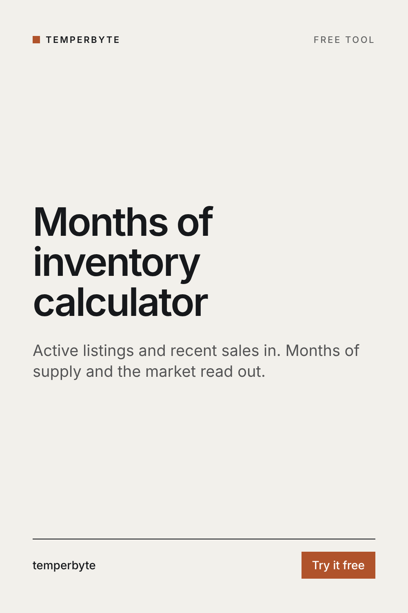

How long would today's listings take to sell at the recent pace? Enter active listings and recent closed sales for an area or price band, and compare two side by side.
A common rule of thumb: under about 4 months is often called a seller's market, about 4 to 6 months balanced, and over 6 months a buyer's market. These lines are conventions, not laws. They vary by area, season and price band, and luxury homes often have more months of supply than entry-level homes in the same town. Compare against the same area's own history when you can.
A town can be a seller's market under $400,000 and a buyer's market over $800,000 at the same time. Running the numbers for the listing's own price band gives the seller a much more honest picture than the area as a whole.
Arithmetic on the numbers you enter, not a market forecast. Use closed sales from your MLS for the same area and property type as the active count, and a period of at least 3 to 6 months to smooth out seasonal swings.
Pricing a listing this week? The Pricing Brief skill for Claude turns pasted comps into the price per square foot math, outliers explained, a suggested list range with confidence, market signals from actives and expireds, and seller talking points.
See Pricing BriefOr try the free comps price calculator.
